La capital de la provincia de Córdoba, se encuentra ubicada a orillas del Río Suquía y se accede por diversas rutas terrestres: por RN Nº 9, Nº 20, Nº 36 y Nº 19, y por las RP Nº 5, Nº 17, E 53, E 55, entre otras.
La ciudad de Córdoba se ha transformado en el eje central del Corredor Bioceánico, contando con la infraestructura de telecomunicaciones más moderna del MERCOSUR: aeropuerto internacional, óptimas rutas de acceso, servicios de apoyatura logística, hotelería y gastronomía de primer nivel, son los factores que se conjugan para posicionar a esta ciudad como el principal destino del interior del país, para la realización de reuniones, congresos y convenciones.
Fundada el 6 de julio de 1573 alberga a una de las poblaciones más antiguas de Sudamérica. Aquí se instalaron distintas órdenes religiosas desde épocas remotas, la más importante fue la orden de los Padres Jesuitas, que dejó en la ciudad un valioso legado cultural, histórico, académico y religioso, materializado en la denominada Manzana Jesuítica, declarada Patrimonio de la Humanidad por la UNESCO en el año 2000.
La ciudad de Córdoba se distingue a nivel nacional e internacional por el valioso patrimonio histórico y religioso, así como también es destacable su trayectoria académica, ya que aquí comenzaron a funcionar la primera universidad pública y la primera universidad privada de la Argentina. En sus calles y paseos resaltan huellas de la antigua arquitectura colonial, que se combinan con modernos edificios, rodeados por parques inigualables.
Además, ofrece renovados espacios verdes como los Parques del Kempes, del Chateau y Bustos, ubicados en la zona noroeste de la ciudad, los cuales suman más de 100 hectáreas recuperadas para el disfrute y recreación de vecinos y turistas.
En relación a los Caminos del Vino, es posible visitar la primera bodega urbana de la ciudad de Córdoba llamada Slow Wines.
Parque del Kempes
El Parque Kempes se transformó en un punto neurálgico de la zona noroeste de la ciudad. Con el río Suquía como eje y emblema, fue adoptado rápidamente por la comunidad como un espacio de bienestar, deporte y recreación. Este espacio se encuentra al frente del Parque del Chateau y juntos conforman un corredor recreativo único en la ciudad.
Actualmente cuenta con más de 80 hectáreas de árboles autóctonos y especies exóticas, estaciones aeróbicas, juegos infantiles e internet gratuito en todo su recorrido.
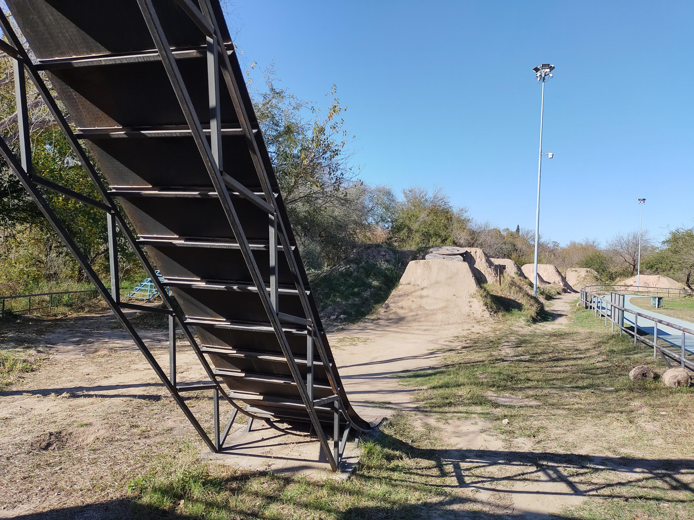
Además, posee un circuito de ciclovías que recorre el lugar atravesando la vegetación autóctona, con una extensión de más de 2.500 metros lineales.
El Parque de los Deportes (ubicado en el corazón del predio) está destinado al desarrollo de deportes extremos, diseñadas por los principales referentes provinciales de cada actividad, en un entorno adecuado y seguro.
A pocos metros del estadio Mario Alberto Kempes, resulta uno de los atractivos imperdibles para conocer y disfrutar junto a los sitios más bellos de la ciudad.
Ficha Técnica
Distancia
3.4 kilometros.
Finaliza en el mismo punto de partida
No.
Nombre punto de partida
Portón acceso Norte.
Nombre punto de llegada
Portón acceso Sur.
Nivel de Dificultad
13 HKG / 17 RNG
¿Está señalizado?
No.
Servicios Complementarios
No.
Tipo de terreno
Camino asfaltado, ciclovía.
Obstáculos
No.
Puntos panorámicos. ¿Cuántos? ¿Dónde? Distancia en km. desde la partida
No.
¿Hay cruces de arroyos y ríos?
No.
Los arroyos o ríos, ¿están todo el año con constante agua?
Desde la fundación de la ciudad, la religión fue uno de sus estandartes hacia el porvenir. El propio Jerónimo Luis de Cabrera cuidó que la tradición católica traída de España se estableciera en Córdoba. Las diferentes órdenes religiosas que arribaron a la Docta la continuaron, para legar un rico y vasto patrimonio, tanto material como inmaterial.
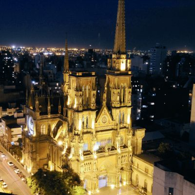
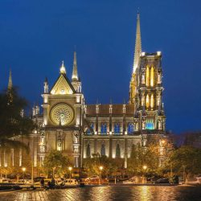
Una de las más visitadas es la Iglesia de los Capuchinos. La construcción de esta imponente creación se dio a partir del año 1926, mientras que su inauguración data del año 1933, aunque solo fue totalmente terminada en 1980. Entre los años 2016 y 2017 se le realizó una restauración.
Esta construcción y sus símbolos fueron ideados por el arquitecto Augusto Ferrari, quien combinó elementos de reminiscencias góticas y románicas.
A medida que el edificio alcanza altura, sus personajes se elevan simbólicamente más cerca del cielo. Pertenece a la Orden Franciscana y fue elegida como la Primera Maravilla Artificial de la Ciudad.
El nombre original de la Iglesia de los Capuchinos es “La Iglesia del Sagrado Corazón de Jesús”, nombre que se recuesta en el simbolismo de su aguja gótica que perfora el cielo.
Catedral
La Catedral es otro gran hito del circuito religioso de Córdoba, enclavada en el centro histórico de la ciudad. La Iglesia de Nuestra Señora de la Asunción es una de las principales joyas de la arquitectura colonial argentina. Desde los inicios de su construcción, en el año 1580, hasta los últimos detalles añadidos por el reconocido artista Emilio Caraffa en 1914, diversos estilos arquitectónicos han quedado plasmados en su diseño.
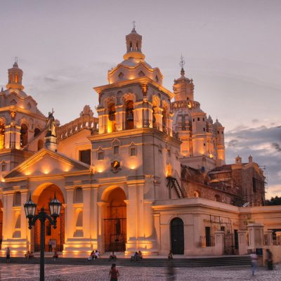
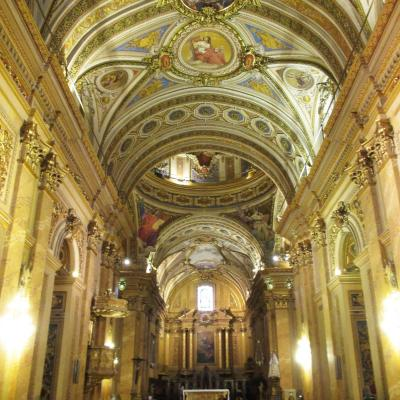
Concebida como templo mayor desde la fundación de la ciudad de Córdoba, la Iglesia Catedral es uno de los íconos más representativos de la capital cordobesa.
Basílica de San Francisco
Otro edificio mayor es la basílica de San Francisco, muy importante en la tradición de la ciudad, ya que los primeros en llegar a Córdoba, poco después de la expedición del fundador, fueron los franciscanos. La orden, fundada por San Francisco de Asís, arribó en 1575.
En el solar que se le destinó erigieron una pequeña capilla de adobe y paja que perduró a lo largo de 15 años, funcionando como primera escuela de varones de la ciudad. Alrededor de la capilla se sepultaron los primeros acompañantes y familiares de Cabrera.
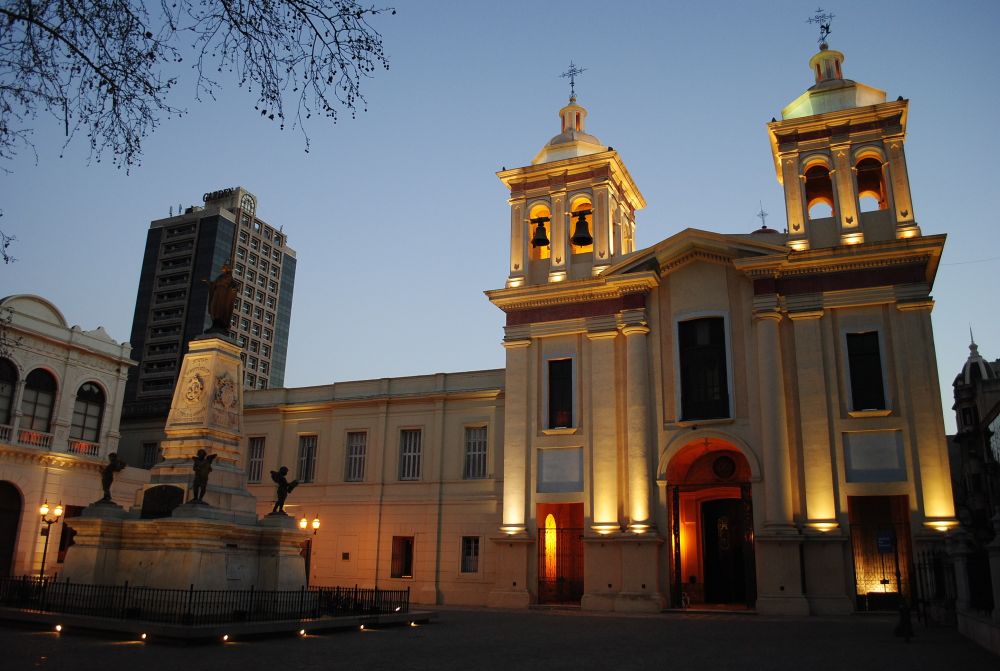
La iglesia actual se concluyó en 1794, tras 17 años de construcción. Es post-colonial, con un estilo clásico respetuoso de los cánones académicos. Presenta una única nave con altares a ambos lados. Se destaca la imagen de un Cristo yacente articulado confeccionado en madera estucada y policromada. El altar principal está dedicado a la Inmaculada Concepción de María, que se ubica entre Santo Domingo de Guzmán y San Francisco de Asís. En la culminación del eje vertical puede verse a San Jorge, patrono de la iglesia.
En 1971, la iglesia San Francisco fue declarada Museo Histórico Nacional. Ella atesora un archivo de gran antigüedad y riqueza, junto con un exquisito mobiliario del siglo XVI. Por la calle Ituzaingo se conservan intactos el salón De Profundis y el antiguo refectorio.
Vinos y Naturaleza
Si los vinos son tu deleite, esta es la experiencia que buscás. Te llevaremos por los caminos del vino del norte cordobés y del Valle de Traslasierra, para que degustes y conozcas las diferentes maneras de trabajar la tierra para sacar el fruto de la vid.
En la mesa, un buen vino para disfrutar
Antes que nada, te enseñaremos las calles de la ciudad de Córdoba, descubriendo la esencia de los cordobeses y su rica historia. Caminarás por las peatonales, plazas, iglesias, mercados callejeros y descubrirás las paredes más antiguas y las más recientes. Este recorrido concluye en el paseo del Buen Pastor, que suma el deleite visual de la Iglesia de Los Capuchinos y trasluce la energía de la Córdoba universitaria.
Logrando un cambio de aire tan solo con recorrer unos pocos kilómetros, comenzaremos el camino del vino por el lugar donde se elaboró el primer vino americano servido en Europa: El lagrimilla, que llegó a la mesa de Felipe V en el siglo XVIII, de la mano de la estancia jesuítica de Jesús María.
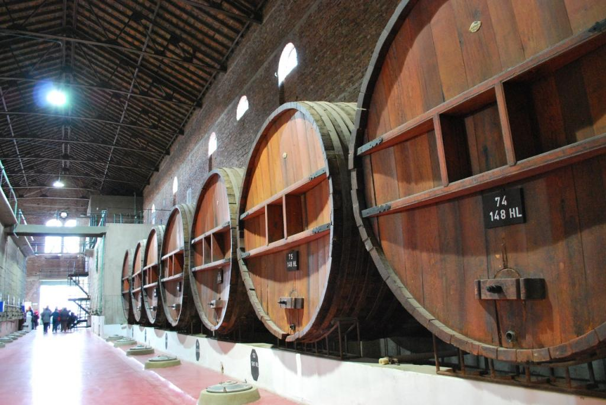
Luego, recorremos los viñedos y bodegas actuales, deleitándonos con sus frescos aromas, caminando por las plantaciones y descubriendo la delicadeza de la mano del hombre para elaborar los exquisitos vinos que degustaremos. La experiencia se completa con los chacinados famosos de ésta región, legado friulano, que hoy continúan elaborando los pobladores con innovaciones en su preparación. El alimento en esta región es orgánico y de origen, es por ello que la gastronomía es la estrella.
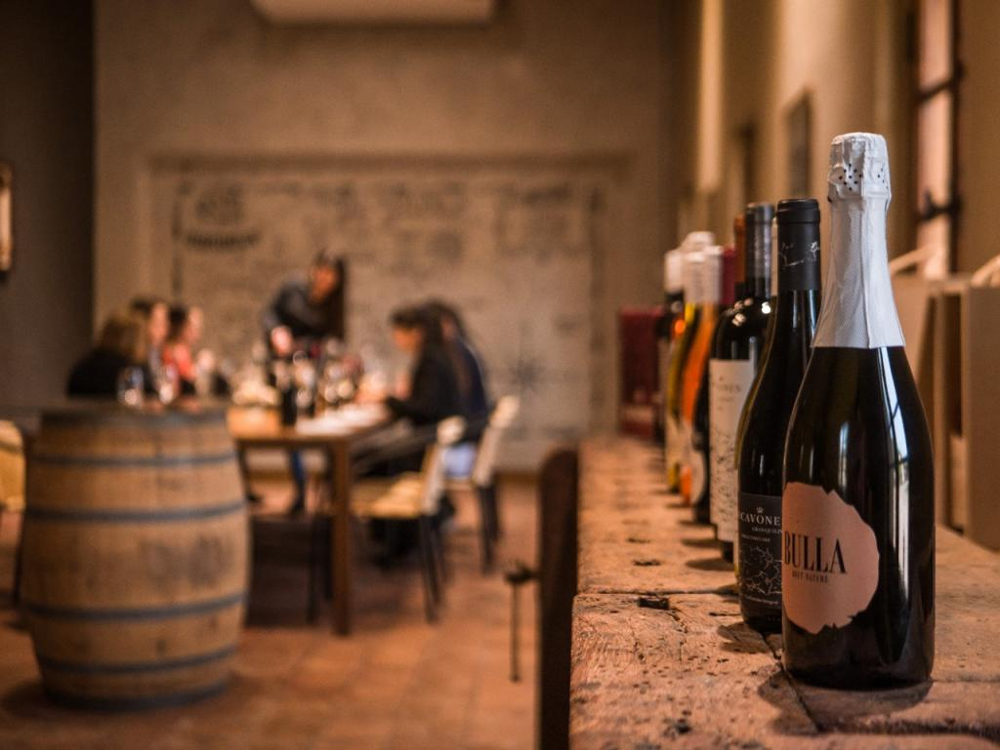
Apreciando las panorámicas que ofrece el cruce de las Sierras Grandes por el camino de las Altas Cumbres, llegamos al Valle de Traslasierra, acompañados todo el tiempo por el avistaje de flora y fauna nativa.
San Javier, un tranquilo pueblo al pie del cerro Champaquí, nos da la bienvenida con su apacible ritmo, sus baqueanos a caballo o en bicicleta, y nos conecta con la naturaleza y el bienestar. Bajamos varios cambios en nuestro ritmo y vivenciamos el arte del buen vivir.
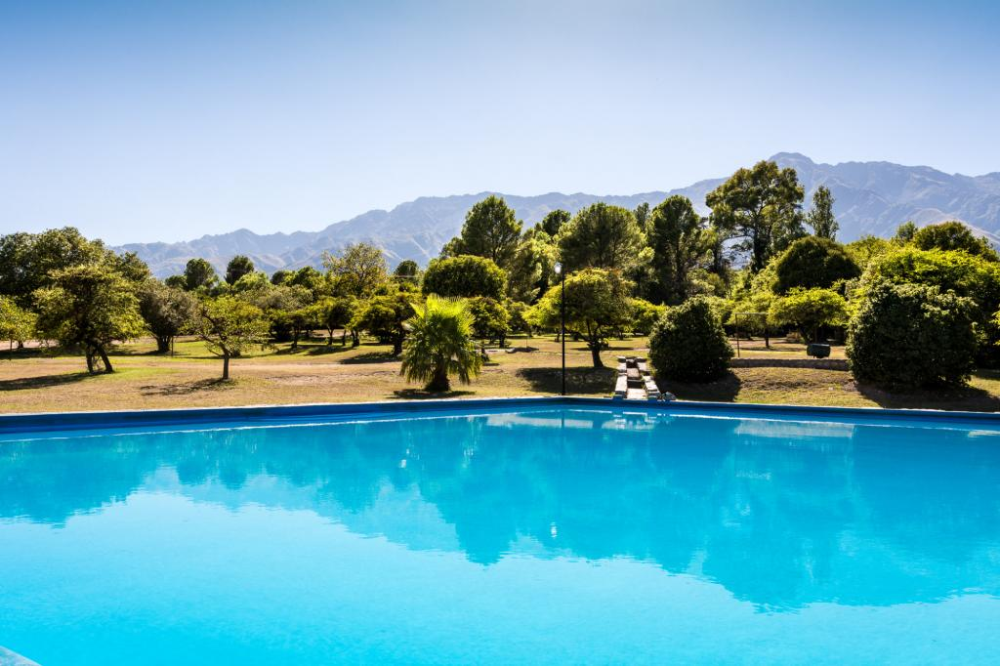
La comarca La Matilde, con su filosofía basada en la biodinámica, la sostenibilidad y las prácticas ecológicas, nos ofrece múltiples actividades saludables, en pleno contacto con la naturaleza virgen cordobesa. Mientras descubrimos las técnicas ancestrales de producción de la vid, en estrecha conexión entre el suelo, los ciclos biológicos y los frutos, degustaremos el exquisito resultado de estas prácticas orgánicas y biodinámicas, acompañado por los manjares de la región: quesos, aceitunas y frutos rojos.
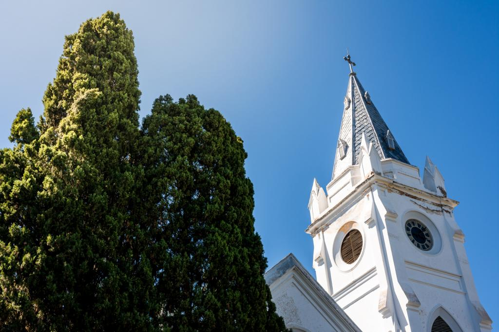
Conocerás y disfrutarás del resto de la producción agroecológica de la zona, y a sus pobladores, que viven en completa armonía con el entorno. Podrás recorrer el pueblo en bicicleta por la mañana y comprar dulces, quesos y aceitunas en el almacén.
Aquí sólo se necesita respirar, mirar, escuchar, comer y disfrutar, nada más (y nada menos).
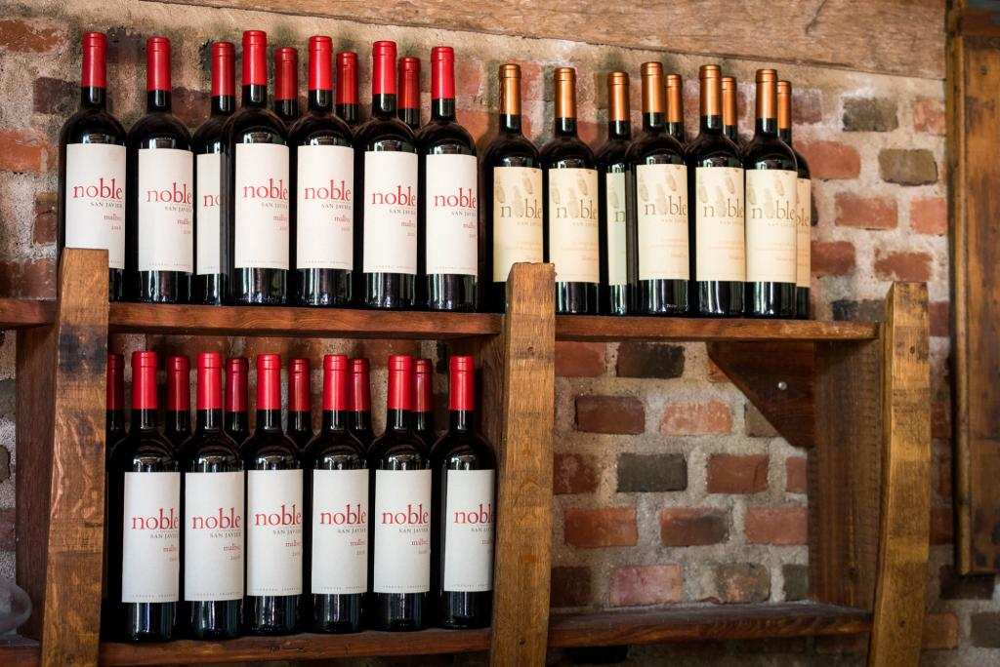
Servicios incluidos:
Traslados privados y tours mencionados.
2 noches en el hotel Azur Real con desayuno buffet.
2 noches en La Matilde con desayuno buffet.
Recorrido a pie por la ciudad.
Entrada a la manzana y estancias jesuíticas.
Visita a viñedos, cata de vinos incluida.
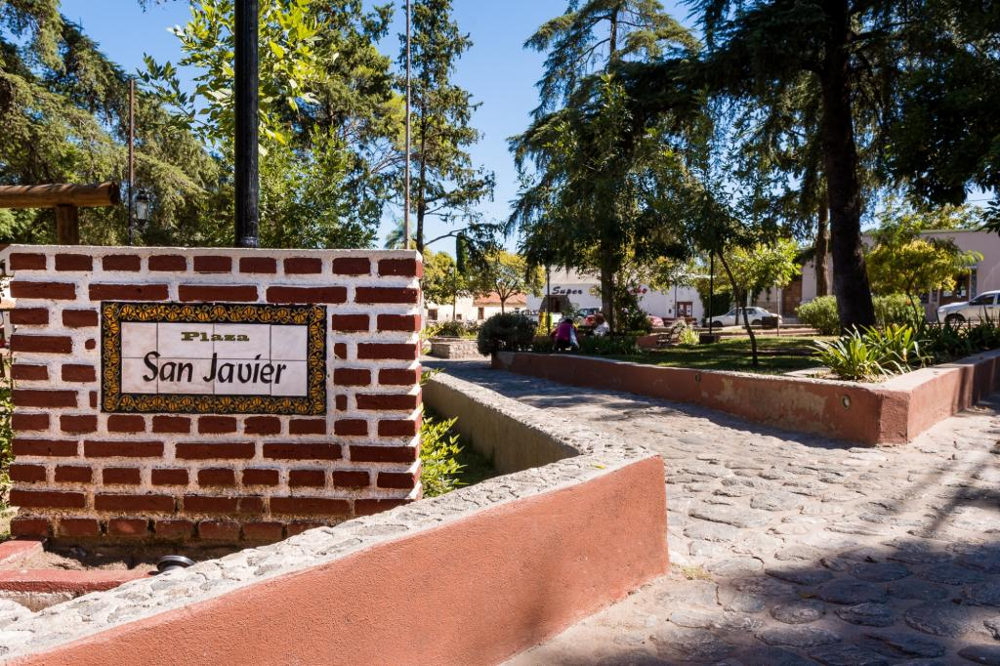
Puede ser con servicio de auto privado con guía, alquiler de auto con mapa e independencia de manejo, o bien en su auto personal. En el último caso, ofrecemos toda la información al llegar y gestionamos la reserva de hoteles y de los lugares a visitar.
 La capital de la provincia de Córdoba, se encuentra ubicada a orillas del Río Suquía y se accede por diversas rutas terrestres: por RN Nº 9, Nº 20, Nº 36 y Nº 19, y por las RP Nº 5, Nº 17, E 53, E 55, entre otras.
La capital de la provincia de Córdoba, se encuentra ubicada a orillas del Río Suquía y se accede por diversas rutas terrestres: por RN Nº 9, Nº 20, Nº 36 y Nº 19, y por las RP Nº 5, Nº 17, E 53, E 55, entre otras.